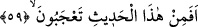

Yâni kıyâmetin takdir olunan vakti geldiğinde açıp ortadan kaldıracak veya engel
olacak kudrete Allah’tan başka hiç kimse sâhip değildir. Fakat Allah Teâlâ ondaki
zararı tamamıyla izâle etmeksizin açıp kaldırmayacaktır.
“Kâşife” kelimesi ism-i fâil olup sonundaki “te” harfi, mevsûfu mukadder olan
müennes bir kelimeye ittibâı hasebiyledir. Yahut mânâ şöyledir: “Şimdi Allah’tan başka
onu tehir etmek suretiyle zamanını açacak bir kimse yoktur. Zira tehir edecek olan ancak
Allah’tır. Yâni onun vakti şimdi gelecek olsa onun vaktini ancak Allah geri çevirebilir.”
Âyetteki keşf, izâle mânâsındadır. Bu izâle küllî bir izâle olmayıp onu vaktine tehir
etmek suretiyle olan bir izâledir. Veyahut âyete şöyle mânâ verilebilir: “Onun hakikatini
bilmesi hasebiyle keşfinin nasıl olacağını bilen ve onun ne zaman geleceğini
belirleyecek olan da O’dur.”
Kur’ân-ı Kerim’de de bu mânâda “Onun vaktini O’ndan başkası açıklayamaz.” (el-
A’raf 7/187) buyrulmaktadır. Başka bir takdire göre mânâ şu şekildedir: “Allah’tan
başka onu kaldıracak kimse yoktur” Buna göre kâşife; “âkıbe” ve “hâine” kelimeleri
gibi masdar hükmünde olmuş olur.
Şâyet “kâşife”nin sonundaki “te” harfi alâmet te’si gibi mübalağa için kılınırsa, o
zaman “keşf” mânâsının başka bir anlamı çağrıştırması sebebiyle makama uygun
düşmeyecektir. Bu âyet büyük kıyâmetin yaklaştığını ve büyük felâketin vukûuna işâret
etmektedir. O büyük felâket; ehl-i fenânın nefislerinden fenâ bulması ve bütün himmet
ve kuvve-i azîmeleri ile Allah’a yönelmeleri anlamına gelen en yüce hakikatin zuhûru
demektir. Ehl-i hicâba nispetle o büyük felâketi Allah’tan başka kimse kaldıramaz,
anlamındadır. Zira ehl-i hicab gaflet denizine batmış ve şehvet esâretinde tükenip
gitmişlerdir. İnsan her an ve her zaman bu felaketi hissetmemiş olsa da keşke onun
perdesini kaldırıp rü’yetullah ve likâ-i ilahiyle müşerref olabilse!
Âlimler der ki: “Âriflerin kıyâmeti dâimîdir. Zira onlar bulundukları her hal üzere
emri müşâhede ederler ve onların şühûdu da zâhirî kıyâmetin vukuuna bağlı değildir.
Bundan dolayıdır ki İmâm Ali (k.v.): “Perde açılmış olsa bile yakînim artmazdı”
demiştir. Yakîni artanlara, hakka’l-yakîn mertebesine ulaşanlara ve tahkîk ve temkîn
makamına yerleşenlere müjdeler olsun! Ancak Allah Teâlâ muîn ve yardımcıdır.
59. Şimdi siz bu söze (Kur’ân’a) mı şaşıyorsunuz?
Bu âyet müşriklerin sözlerini yadırgamaya mâtûfen getirilmiştir. Râgıb, “aceb” ve
“taaccüb”ün, bir kimsenin bir şey hakkında bilgisi olmadığı için ona taarruz etme hâli
olduğunu beyân eder. Bu nedenle bazı hakîmler; “aceb” kelimesini sebebi bilinmeyen
şey olarak târif ederler.